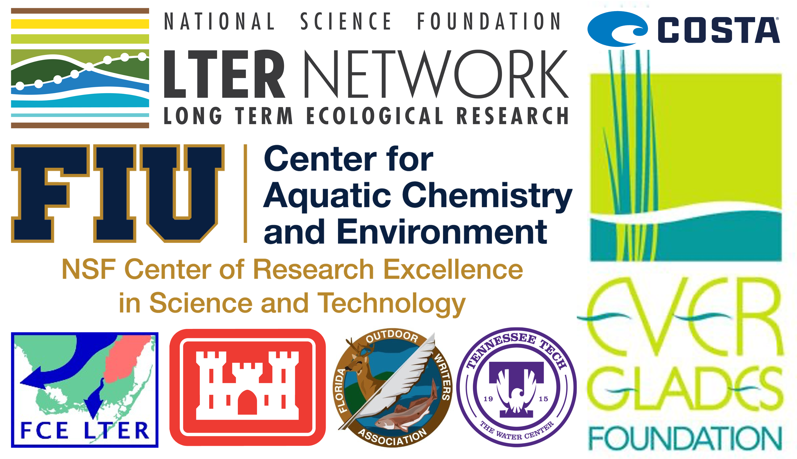

Research
The bulk of my research has taken place in aquatic ecosystems working with fish . However, I did spend several summers working with reptiles and amphibians in the beautiful hardwood forests and open oak savannas of Tennessee. Ultimately, I consider myself an ecosystem ecologist interested in untangling the threads linking pattern to process behind the “black box” of ecosystems, regardless of the system.
“Research is formalized curiosity. It is poking and prying with a purpose.” - Zora Neale Hurston

Functional roles of animals
Animals responding to and interacting with their environment can result in the transport/modulation of nutrients and energy available for production, decomposition, and other important ecosystem processes
Related publications
Hudson RR, K Wheeler, M White, and JN Murdock (2024). Migratory redhorse suckers provide subsidies of nitrogen but not phosphorus to a spawning stream. Ecology of Freshwater Fish https://doi.org/10.1111/eff.12758
White M, K Wheeler, RR Hudson, and JN Murdock (2023). Salmon of the Southeastern U.S.: Sucker migrations deliver resource subsidies to oligotrophic stream. Ecology of Freshwater Fish https://doi.org/10.1111/eff.12676
White M (2021). Nutrient contributions from and early life history variability of an adfluvial sucker in an oligotrophic southeastern stream. M.S. Thesis. Available from ProQuest
Ecological drivers and consequences of animal movement
Movement is a fundamental part of life, mediating the fitness of individuals with cascading effects at multiple scales of organization with implications for biodiversity and evolution
Related publications
Santos RO, M White, WR James, NM Viadero, JA Massie, RE Boucek, and JS Rehage (accepted; in review). Cause and consequences of individual variability in space use in subtropical riverscapes. Scientific Reports
Patterns in basal resource use and energy flow
The quantity, quality, and origin of basal resources entering food webs can have strong effects on the function and structure of systems with implications for stability within and across ecosystems
Related publications
Sturges J, WR James, R Rezek, RO Santos, M White, G Badlowski, S Trabelsi, JA Massie, J Nelson, J Trexler, and JS Rehage (accepted; in review). Seasonality drives green and brown energy pathways in food webs across an ecosystem gradient. Ecosphere
Spatiotemporal changes in animal communities
Research Funding
